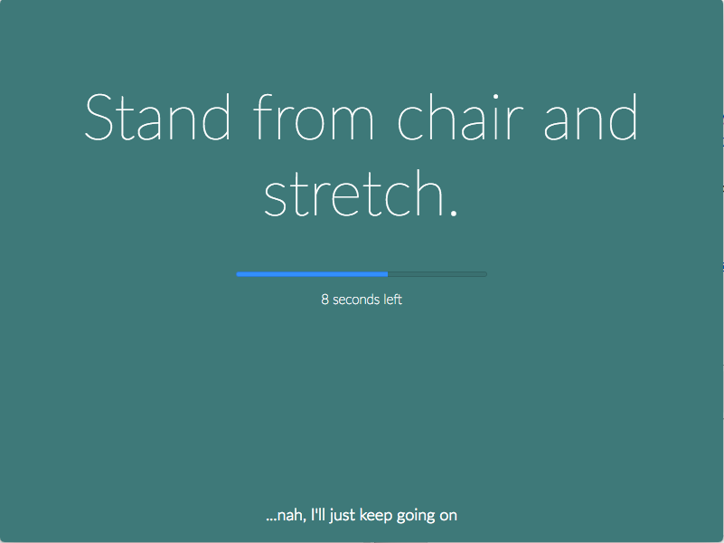
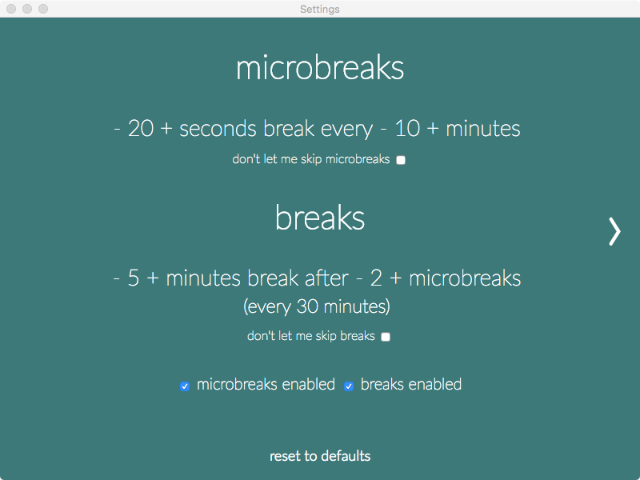
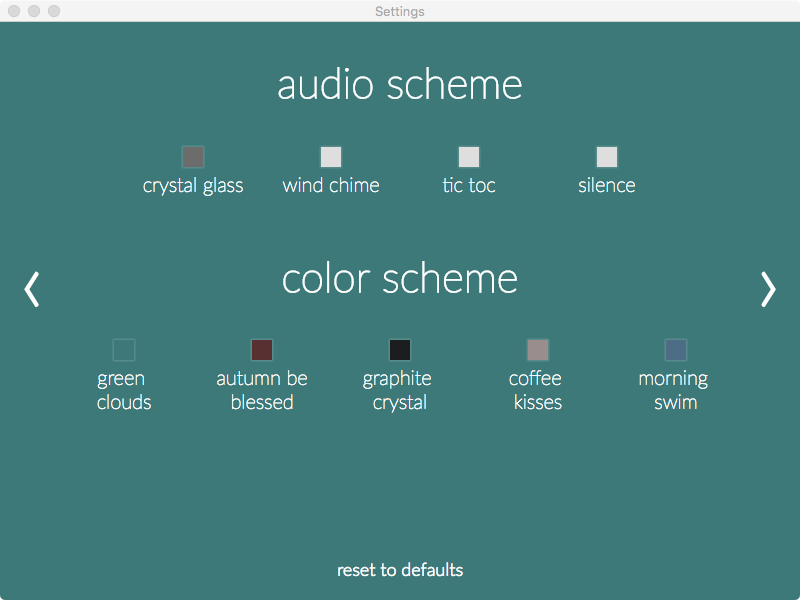

요즘 눈 건강이 적신호입니다. 원래 안구건조증이 있었는데, 몇년 전 라식 수술을 한 이후로 건조증이 더 심해졌습니다. 게다가 직업 상 모니터를 계속 들여다보며 눈을 혹사시키는 환경에, 수시로 스마트폰을 들여다보게 되구요. 퇴근 후에도 별반 다르지 않죠. 포스팅을 하고, 플스를 하고, 주말에는 전자 책을 읽습니다. 제가 잠이 들어야만 눈은 쉴 수 있습니다.
저 뿐만 아니라 다른 분들도 비슷하실 겁니다. 주위를 보면 시력이 급감했다는 분도 많고, 눈 충혈은 일상입니다. 눈이 피곤하면 멀쩡한 몸도 쳐지고 피곤한 느낌이 드는데요, 그래서 일할 때 블루라이트 차단하는 보안경을 쓰는 분들도 있습니다.
근본적으로 눈을 쉬어야 합니다만, 그러기 힘든 분들을 위해서 조금이나마 눈 건강에 도움이 될 수 있도록 제가 사용하고 있는 툴을 소개해드리려고 합니다.
f.lux
블루라이트는 전자기기 화면에서 나오는 청색광으로 380∼500nm 사이의 파장에 존재하는 파란색 계열의 빛입니다. 블루라이트의 유해성에 대해서는 논란이 있습니다만, 눈을 피로하게 만들고, 수면 사이클에 영향을 준다는 것은 입증된 것으로 알려져 있습니다.
f.lux는 이러한 청색광을 차단시켜주는 툴입니다. iOS 의 기능인 Night shift 나 안드로이드의 여러 청색광 차단 앱들을 생각하시면 될 것 같습니다.

하지만 f.lux 는 단순하지 않습니다. f.lux 에 현재 위치와 기상 시간을 입력하고, 원하는 시나리오를 선택하면 나에게 맞춤으로 화면의 밝기와 색상이 변합니다. 잘 맞춰놓으면 내 사이클에 맞춰서 화면을 조정해주니 편합니다. 물론 사무실에서 한창 야근할 시간에 화면이 너무 어둡고 노랗게 변할 때는 원을 움직여 조절해주시면 됩니다.
그냥 간단하게 현재 화면의 밝기와 색깔을 바꿀 수도 있습니다.
- 1200K Ember (불이 이글이글하게 핀 숯덩이)
- 1900K Candle (양초)
- 2300K Dim Incandescent (흐릿한 백열등)
- 2700K Incandescent (백열등)
- 3400K Halogen (할로겐등)
- 4200K Fluorescent (형광 램프)
- 5500K Sunlight (햇살)
- 6500K Daylight (대낮)
실제 조명과 연동할 수도 있다네요.

Eye Leo
블루라이트 차단만으로는 부족할 수 있습니다. 한 가지 일에 오랫동안 집중하게 되면 눈을 깜빡이는 횟수가 현저하게 줄어듭니다. 이런 현상은 눈을 쉽게 건조하게 만듭니다.
해답은 수시로 눈을 깜빡이고, 눈동자 굴리기 운동을 하거나, 잠시 창 밖을 바라보는 등 눈 스트레칭을 하는 것인데, 알아도 막상 안하는 일들입니다.

이런 눈 스트레칭을 하도록 도와주는 귀여운 표범(Leopard)가 Eye Leo 입니다. 시간이 되면 화면에 나타나서 눈 운동을 시켜줍니다. 우리는 그저 시키는대로 따라하면 됩니다.
기본 설정은 다음과 같습니다.

눈 운동 외에도 Long break 타임에는 화면 전체를 검게 해서 강제로 쉬도록 도와줍니다. 이걸 이용하면 뽀모도로 기법으로 활용할 수도 있겠네요. 물론 바쁘면 휴식을 스킵하거나 일정 시간 동안 끌 수도 있습니다. strick mode 를 설정하면 아예 스킵할 수 없으니 상황에 따라 사용하시면 되겠습니다.
눈 운동 시간에 창 밖을 바라보라는 메시지도 나오는데, 내 근처에 창문이 없다면 창문 옵션을 꺼줄 수도 있는 귀여운 툴입니다.
Stretchly
하지만 Eye Leo 는 윈도우(Windows XP, Vista, 7, 8, 10) 에서만 가능합니다. 그렇다면 macOS 에서는 어떤 대안이 있을까요?
몇 가지 대안 중 제가 사용하는 프로그램은 stretchly 입니다. 굉장히 심플하죠? 쉬는 시간마다 화면에 나와 쉬면서 할 수 있는 것들을 알려줍니다.

다음과 같이 설정에서 시간과 색깔, 오디오 등을 설정할 수 있습니다.


이번 포스팅에서는 눈 건강에 좋은 프로그램들을 살펴봤습니다. 모두 무료로 사용할 수 있는 프로그램이니 잠시 시간을 내서 설치해보시면 좋겠습니다.